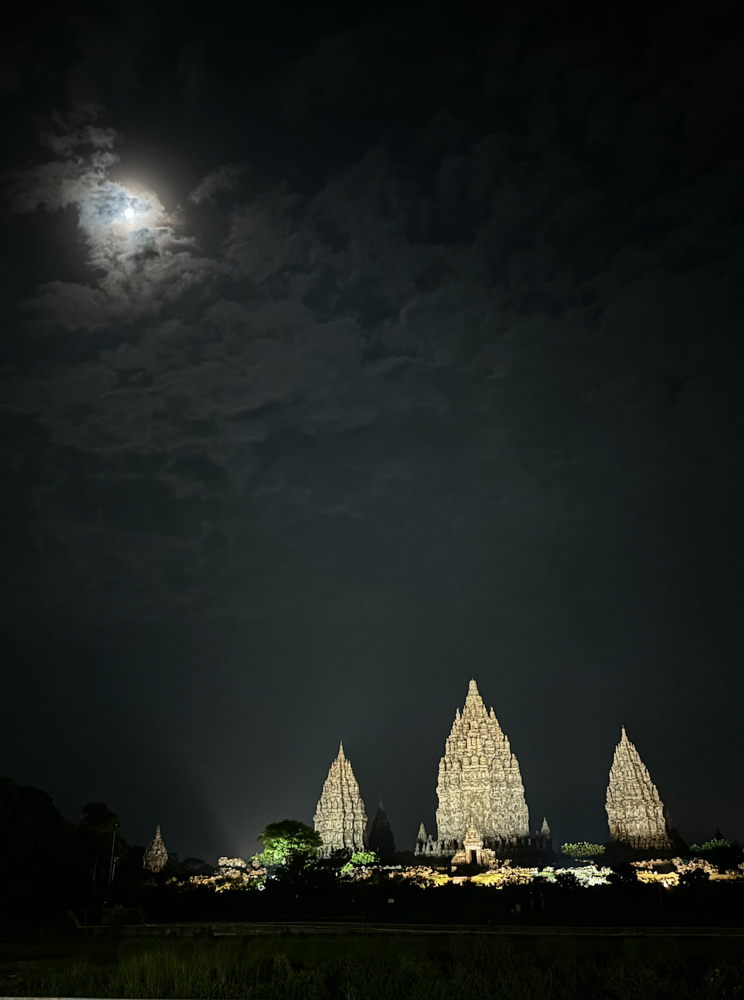
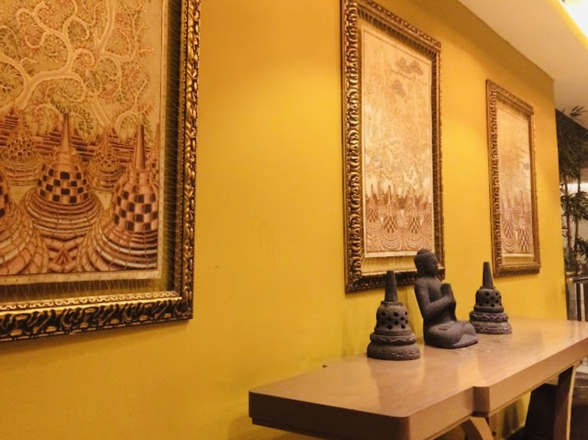

Sendratari Ramayana
A. Tema
Permasalahan utama: Penculikan istri orang (Shinta)
B. Tokoh
Tokoh utama:
- Rama: bijak, setia
- Shinta: lembut, sabar
- Rahwana (penculik Shinta): cerdas, ambisius
Tokoh protagonis, antagonis, tritagonis:
- Protagonis: Rama (bijak, setia)
- Antagonis: Rahwana (cerdas, ambisius)
- Tritagonis: Hanuman (setia, cerdik)
C. Latar
Tempat: istana, hutan
Waktu: zaman kerajaan Hindu Kuno
Suasana berkesan: Tegang dan dramatis saat terjadi konflik yang menentukan nasib.
D. Alur
- Orientasi: Kehidupan bahagia Rama dan Shinta
- Konflik: Ada orang yang menculik Shinta
- Komplikasi: Rama menghadapi tantangan
- Klimaks: Pertempuran antara Rama dan Rahwana untuk merebut Shinta
- Antiklimaks: Rama berhasil mengalahkan Rahwana dan menyelamatkan Shinta
- Resolusi: Rama dan Shinta bersatu kembali
E. Amanat dan Kesan
- Pesan moral: Kesetiaan akan diuji, tapi kebenaran yang akan menang
- Nilai relevan: Masih relevan, contohnya kesetiaan, keberanian, dan pengorbanan
- Kesan: Pentasnya menarik, karena bukan hal yang bisa dilihat setiap hari. Tapi suara kurang jelas karena volume kurang kencang. Secara keseluruhan alurnya lancar.
Resensi Hotel Grand Mercure Yogyakarta Adi Sucipto
Yogyakarta merupakan destinasi yang sangat menarik bagi para wisatawan. Yogyakarta terkenal dengan kekayaan budaya, kesenian, dan sejarah yang memikat. Kota ini tidak hanya menawarkan keindahan alam yang mengagumkan, seperti Gunung Merapi, tetapi juga berbagai situs bersejarah dan budaya yang luar biasa. Contoh utamanya adalah Keraton Yogyakarta.
Grand Mercure Yogyakarta Adi Sucipto adalah hotel bintang 5 yang menawarkan kemewahan modern di tengah kekayaan budaya Jawa. Terletak di Jalan Laksda Adisucipto Nomor 80, Yogyakarta, hotel ini berdiri sejak tahun 2017 dan dimiliki oleh Sunindo Prima Land. Lokasinya strategis, dekat dengan Lippo Plaza Jogja, Rumah Sakit Siloam, Universitas Islam Negeri Sunan Kalijaga, dan Stasiun Kereta Tugu.
Grand Mercure memiliki fasilitas lengkap seperti kolam renang yang luas, restoran dengan beragam menu, serta spa dan ruang pijat. Harga kamar berkisar dari Rp900.000 hingga Rp3.000.000 tergantung tipe kamar. Pelayanannya profesional dan ramah, kebersihannya sangat baik, serta keamanan hotel terjaga 24 jam.
Meski begitu, masih ada beberapa kekurangan seperti antrean panjang saat check-in/out dan beberapa kamar mandi yang butuh pembersihan lebih detail. Selain itu, sistem kunci kamar juga perlu diperhatikan kembali.
Secara keseluruhan, Grand Mercure Yogyakarta Adi Sucipto adalah pilihan akomodasi yang sangat baik bagi wisatawan maupun pelaku bisnis. Dengan pelayanan yang baik dan fasilitas lengkap, hotel ini sangat direkomendasikan bagi siapa saja yang ingin merasakan kenyamanan dan kemewahan di tengah budaya Yogyakarta.